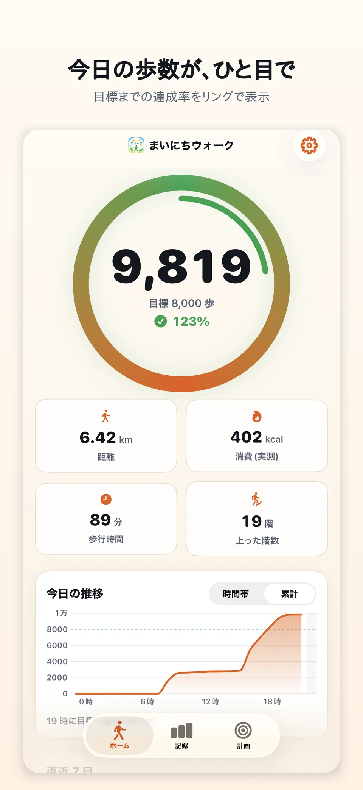
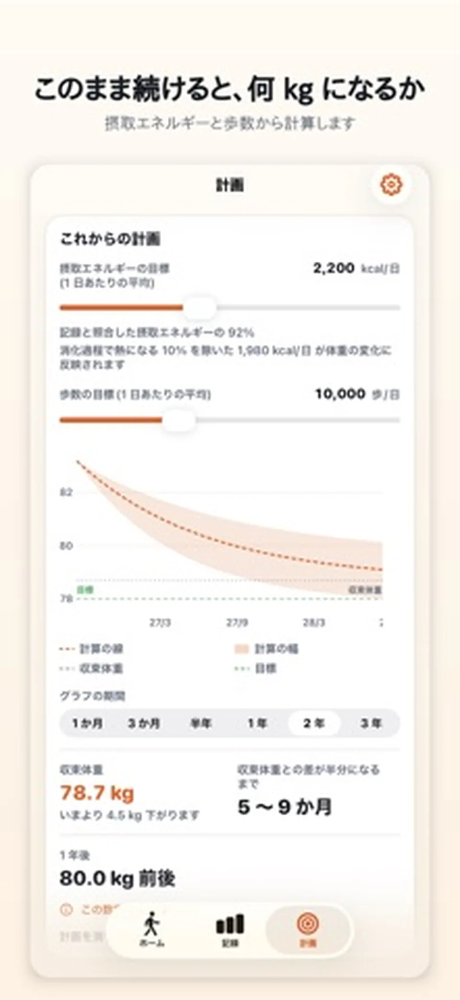
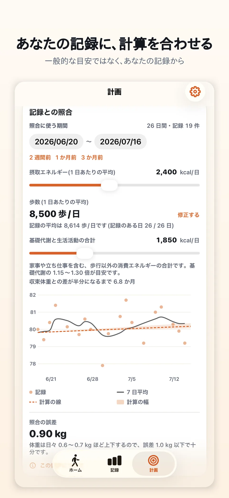

今日を確認する
歩数、距離、消費エネルギー、歩行時間、目標までの進み具合を見やすく確認できます。
まいにちウォーク
歩数計 + 体重記録 + この先の見通し
iPhoneが記録した今日の歩数を、ひと目で確認。 必要に応じて体重も記録し、記録がたまると 「このまま続けたら」の体重の見通しまで確認できます。

毎日見るものを、ひとつのアプリに。
歩数計としてシンプルに使いながら、必要な人は体重記録や将来の見通しまで同じアプリで確認できます。
歩数、距離、消費エネルギー、歩行時間、目標までの進み具合を見やすく確認できます。
日・週・月・年の歩数や、任意で記録した体重・7日平均を振り返れます。
自分の記録に計算を合わせ、現在の生活を続けた場合の体重の見通しを確認できます。
実際のアプリ画面
App Storeで公開している画面です。歩数の確認から、体重の見通しまで同じデザインでつながっています。


現在の公開版
歩数計として必要な機能をすぐ使い始められることを大切にしています。
最新のデータの取扱いについては、 プライバシーポリシーをご確認ください。